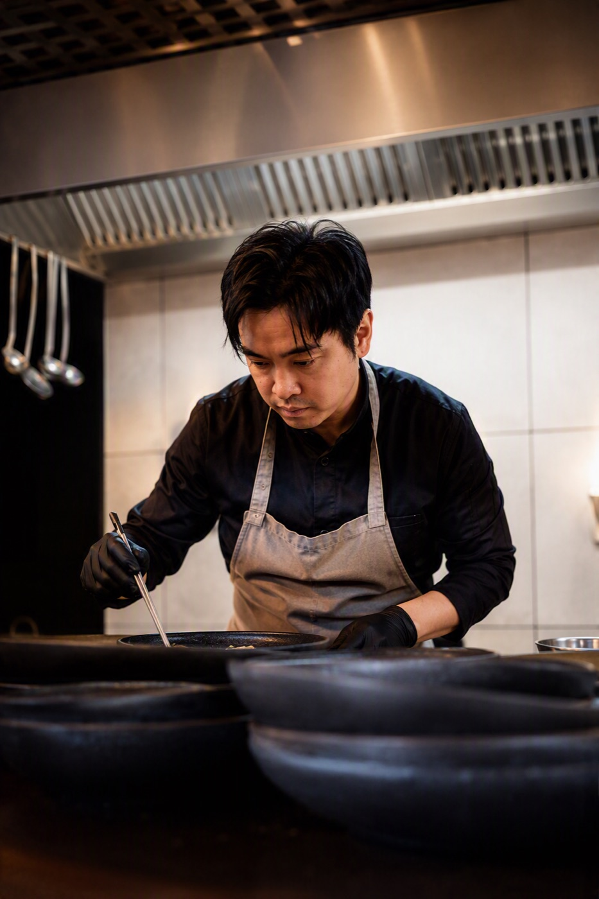

Sam
Private Chef
Geboren in Bangkok und aufgewachsen in Deutschland, wurde Sam schon früh von der Küche seiner Kindheit geprägt. Die Leidenschaft fürs Kochen begann zu Hause, wo seine Mutter für die Familie kochte und Essen Menschen zusammenbrachte. Mit über 20 Jahren Erfahrung und Stationen im Hyatt Regency Düsseldorf, im Sternerestaurant Hannappel sowie bei Mintrops „M“ hat er seine eigene Handschrift entwickelt. Geprägt von seinen thailändischen Wurzeln und seiner Ausbildung in Deutschland verbindet er traditionelle Aromen mit neuen Ideen und unterschiedlichen Einflüssen. Inspiration findet er in Restaurants, Museen und den kleinen Entdeckungen des Alltags. Für ihn steht gutes Essen vor allem für Gemeinschaft, Austausch und gemeinsame Erlebnisse.